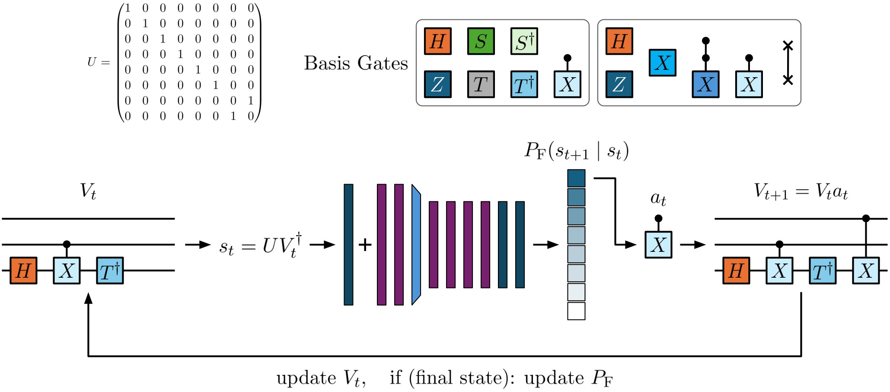
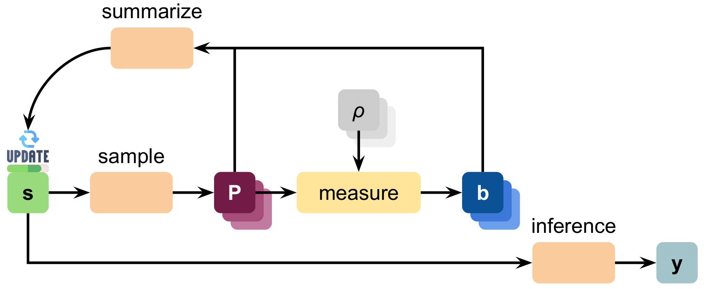

QFlowNet: Fast, Diverse, and Efficient Unitary Synthesis with Generative Flow Networks
Inhoe Koo, Hyunho Cha, and Jungwoo Lee
IEEE International Conference on Quantum Communications, Networking, and Computing (QCNC), 2026.
I'm Inhoe, exploring quantum computing, AI, and the physics they can reveal.
Every idea is connected. Choose an orbit to discover mine.
THE BIGGER QUESTION
My goal is to develop quantum computational methods for physical simulations beyond classical reach—bringing algorithms, learning, and hardware into the same conversation.
Discover my vision & goals ↗IDEAS INTO IMPACT
Finding a diverse landscape of compact quantum circuits with generative flow networks.
Making every measurement count through adaptive, intelligent quantum-state acquisition.
Exploring reinforcement learning for efficient rearrangement of neutral-atom arrays.
Small questions. Infinite possibilities.
More about my world ↗01 / ABOUT ME
I'm an Electrical and Computer Engineering undergraduate at Seoul National University, exploring quantum computing, artificial intelligence, and quantum simulation.
My work connects learning-based algorithms with physical quantum systems—from generative circuit synthesis and adaptive measurements to neutral atoms and superconducting hardware.
I'm always interested in thoughtful conversations about quantum computing and AI.
02 / PUBLICATIONS & PRESENTATIONS
Papers, ongoing work, and conversations across the quantum community.
Inhoe Koo, Hyunho Cha, and Jungwoo Lee
IEEE International Conference on Quantum Communications, Networking, and Computing (QCNC), 2026.
Reinforcement learning for selecting Pauli measurements from cumulative outcomes. Submitted to IEEE QCNC 2027.
Explore the project ↗Inhoe Koo, Luis Fernández, and Wenchao Xu
Japan Society of Applied Physics (JSAP), 2026.
Inhoe Koo
IEEE/IEIE International Conference on Consumer Electronics Asia (ICCE-Asia), 2025.
SNU KIC SV K-BioX ABDD SUMMIT, Global Innovation Symposium, Stanford University.
03 / VISION & GOALS
My goal is to develop quantum computational methods for physical simulation problems beyond the reach of classical computers.
Useful quantum computation emerges when algorithms, hardware constraints, and physical implementation are designed together. I use AI to navigate complex design spaces, guided by physical understanding.
I want to connect quantum simulation with executable circuits: learning how to choose gate sequences, qubit mappings, and schedules that balance fidelity, circuit depth, and compilation time.
My starting point: QFlowNet ↗I am interested in compilers for three-dimensional atom arrays and fault-tolerant architectures that account for restricted movement and stochastic atom loss. Hardware constraints should shape the algorithm from the beginning.
Learning from neutral-atom systems ↗From adaptive measurement policies to superconducting RF components, I aim to improve how quantum information is delivered, protected, and read out. My interests include backend-aware compilation that balances depth, ancillas, connectivity, and synchronization.
Explore my research journey ↗04 / EDUCATION
MAR 2021 — PRESENT
B.S. in Electrical and Computer Engineering
Includes 21 months of R.O.K. mandatory military service, May 2023 – February 2025.
FEB 2026 — AUG 2026
Exchange student
Swiss Federal Institute of Technology Zürich
MAR 2018 — FEB 2021
GPA 4.24 / 4.3
05 / RESEARCH
From circuit discovery and atom movement to superconducting control and readout.
SEP 2026 — PRESENT
SNU · Research intern · Prof. Seungyong Han
Electromagnetic and thermal simulations of superconducting RF components for qubit control and readout. I study resonators, transmission lines, and Purcell filters to understand quality factors, coherence, and readout fidelity under cryogenic operation.
FEB 2026 — AUG 2026
ETH Zürich · Semester project · Prof. Wenchao Xu
Hardware-aware reinforcement learning for rearranging neutral Rubidium and Ytterbium atoms with acousto-optic deflectors. Research conducted at the Paul Scherrer Institute, Switzerland, and presented orally at JSAP 2026.
Explore the project ↗JAN 2025 — JAN 2026
SNU · Research intern · Prof. Jungwoo Lee
QFlowNet for generative unitary synthesis, and CASH for adaptive Pauli measurement selection. QFlowNet was presented at IEEE QCNC 2026; CASH has been submitted to IEEE QCNC 2027.
FEB 2025 — APR 2025
Researcher · Adviser: Guillermo Aboumrad
Proposed a curriculum-learning model for discovering an ansatz to estimate the lowest energy of a Hamiltonian.
06 / BEYOND THE LAB
Teaching, community, and the interests that keep me curious.
Korean (native) · English (fluent, TOEFL iBT 109)
RESEARCH NOTE / QUANTUM CIRCUITS
Fast, Diverse, and Efficient Unitary Synthesis with Generative Flow Networks

How can we discover many compact quantum circuits for a target unitary, instead of converging on a single solution?
QFlowNet pairs generative flow networks with Transformers to sample circuit candidates in proportion to their reward. Synthesis becomes a path-finding problem: reduce the unitary residual to the identity matrix.
The framework combines circuit diversity, compactness, and fast sampling. The project's research note reports a 99.7% success rate on 3-qubit benchmarks with circuit lengths of 1–12.
Inhoe Koo, Hyunho Cha, and Jungwoo Lee · IEEE QCNC 2026
CASH / ADAPTIVE QUANTUM STATE CLASSIFICATION
Making each measurement more informative through reinforcement learning.

Fixed measurement bases can waste the limited shots available from an experiment. Can a learning agent decide which information to acquire next?
I developed CASH with colleagues at SNU's Cognitive Machine Learning Lab. The framework sequentially selects Pauli measurement operators from cumulative outcomes to maximize information gained per shot.
We evaluated adaptive state classification across GHZ, W, cluster, and noisy parameterized states, comparing against static-basis measurements under the same measurement budget.
This work connects learning-based decision-making with experimental information acquisition. The manuscript has been submitted to IEEE QCNC 2027.
All research ↗SEMESTER PROJECT / ETH ZÜRICH & PSI
Reinforcement learning for neutral-atom rearrangement.
At the Experimental Quantum Engineering Lab, ETH Zürich, I developed reinforcement learning algorithms for the efficient rearrangement of neutral Rubidium and Ytterbium atoms using acousto-optic deflectors.
The semester project was advised by Prof. Wenchao Xu, with research conducted at the Paul Scherrer Institute in Switzerland. I presented this work orally at JSAP 2026.
AOD systems impose row/column motion and non-crossing constraints. I developed learning-based packing actions compatible with those constraints, connecting path planning with physically executable atom movement.